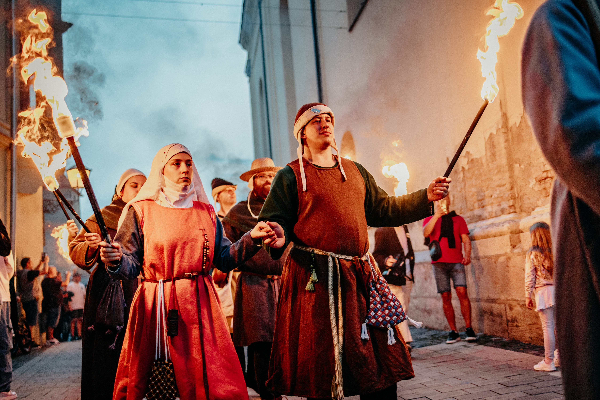

INFO
Otvorenie jarmoku – sprievod v piatok o 18:00
Slávnostný pochod historickým centrom mesta otvára Trnavský jarmok 2026. Rytieri, kráľovský dvor a stredoveké kostýmy sa vydajú z Trojičného námestia cez Hviezdoslavovu ulicu až k Severnej bráne. Vstup voľný pre všetkých návštevníkov – príďte s rodinou!